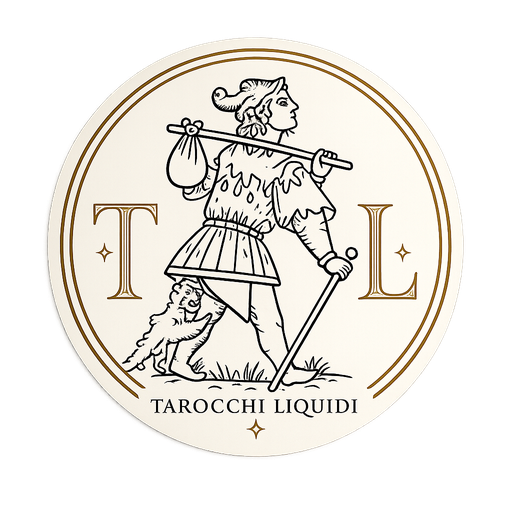

Uno spazio dedicato all'esplorazione dei dubbi più frequenti. Cinque sale per riconoscere la domanda che continua a tornare.
Quando scegliere sembra impossibile.
L'altro come specchio e sfida.
Chi sono quando nessuno guarda?
Realizzazione, fatica e vocazione.
Abbandonare il porto sicuro.